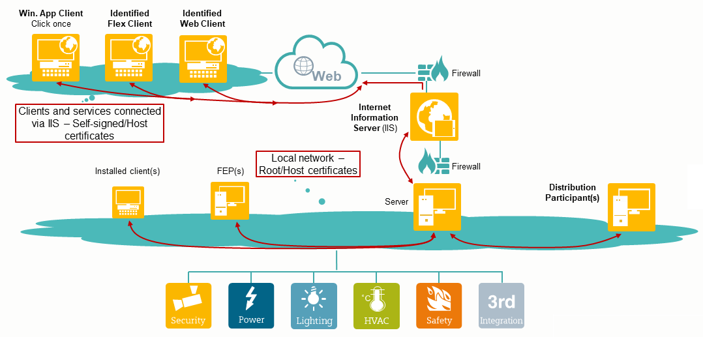

Security Certificates
Certificates are used to authenticate entities (person, organization, website or a software application) and establish secure communication between server and clients when deploying Desigo CC system.
For securing the communication, you can use the SMC-created certificates as well as the commercial certificates (certificates signed by a trusted Certificate Authority (CA)).
In SMC, using you can create root, host, and self-signed certificates on a server, client or FEP and set them as default and use them for:
- Securing a client/server communication: You can use both .pem certificates as well as certificates from the Windows store for this purpose.
- Securing a web communication between the Server and the remote web server (IIS): For this, you can only use certificates available in the appropriate Windows Certificate store.

SMC allows you to create the following two types of certificates:
- Windows-store based certificates (root, host, and self-signed):
- used to secure the client/server communication and Server/IIS communication.
- have the file formats.cer and .pfx.
- the .cer file format contains the certificate, the .pfx file format contains the private key.
- Windows certificates must be available in the appropriate Windows Certificate store.
- To work with the Installed Client on a Client/FEP station, the logged-on operating system user requires access to the private key of the host certificate stored in the Windows Certificate store.
- File-based certificates (root and host):
- used to secure the client/server communication.
- have the file format as .pem (Privacy Ehanced Mail).
- the root or host certificates of the .pem based type actually consist of two .pem files; one containing the certificate and another containing the private key.
- must be available on the disk of the server or Client/FEP computer.
This section provides background information on the security certificates of Desigo CC . For related procedures, see the step-by-step section.